天空群島 v9｜全怪物與裝備細化
28 種怪物、30 件裝備再次細化：臉部可讀性、曲線飾邊、分層護甲、羽軸與七套徽記。沿用 v8 的 126 個分散生成位置。
本頁模型圖由同一套造型配方另行渲染，不是 Studio 截圖。材質、陰影及布林接縫可能不同；手繪貼圖與逐件高精度雕刻仍未完全還原。
目前顯示 v9 本次模型
天空草原島
地表出生點至少相隔 90 格；怪物各有巡邏與追擊範圍。同一玩家最多吸引兩隻一般怪，頭目獨立。
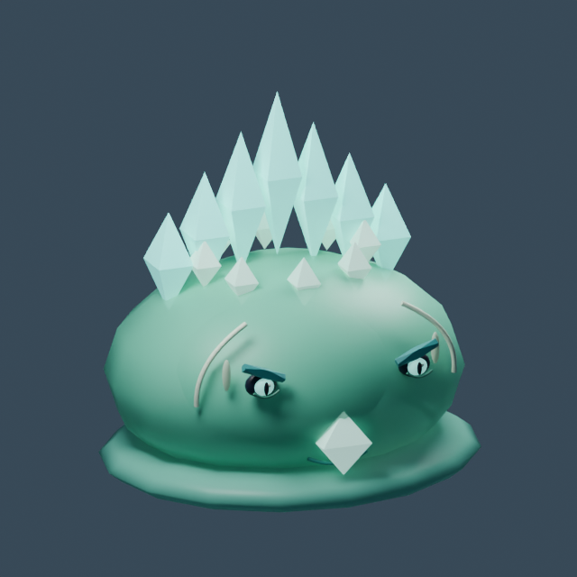
天空史萊姆
野外 · Lv.1–20
03 史萊姆草原
| 天空守衛長劍 | 2% |
| 天空羽冠 | 4% |
| 天空巡衛甲 | 4% |
| 天空疾風靴 | 5% |
| 無裝備 | 85% |
每次擊殺最多一件，為互斥機率。
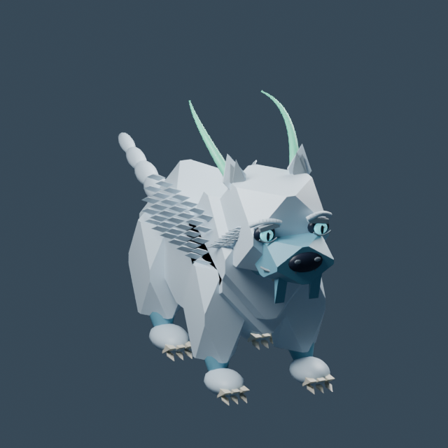
疾風角狼
精英 · Lv.21–35
04 風車丘陵
| 天空守衛長劍 | 5% |
| 天空羽冠 | 8% |
| 天空巡衛甲 | 8% |
| 天空疾風靴 | 9% |
| 無裝備 | 70% |
每次擊殺最多一件，為互斥機率。
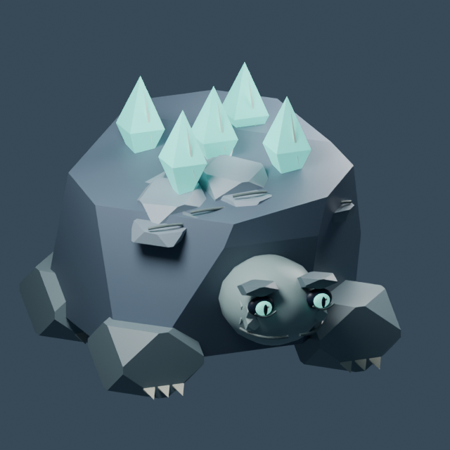
晶背岩龜
洞窟 · Lv.36–45
05 礦石洞窟 → 洞內三室（分散生成）
| 天空守衛長劍 | 8% |
| 天空羽冠 | 12% |
| 天空巡衛甲 | 12% |
| 天空疾風靴 | 13% |
| 無裝備 | 55% |
每次擊殺最多一件，為互斥機率。
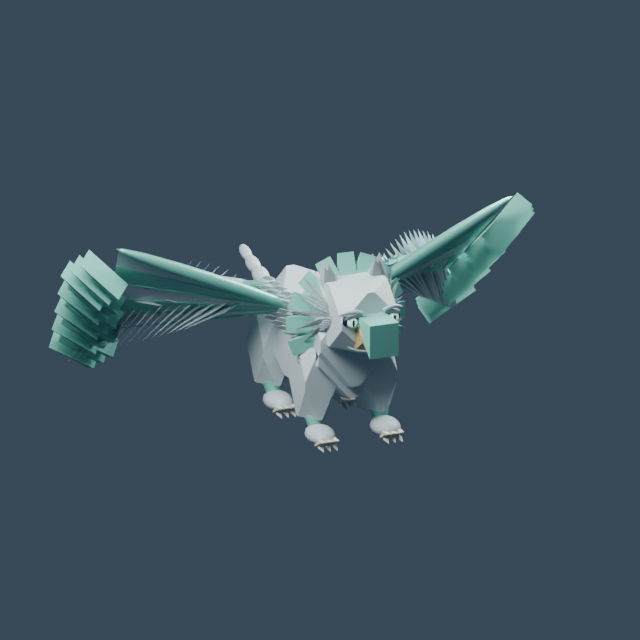
風角獅鷲
頭目 · Lv.50–50
06 草原試煉場
| 天空守衛長劍 | 15% |
| 天空羽冠 | 25% |
| 天空巡衛甲 | 35% |
| 天空疾風靴 | 25% |
| 無裝備 | 0% |
每次擊殺最多一件，為互斥機率。
本島掉落套裝
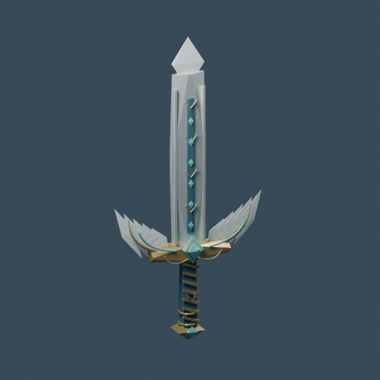
天空守衛長劍
武器 · 穿戴 Lv.1+
Attack: 18
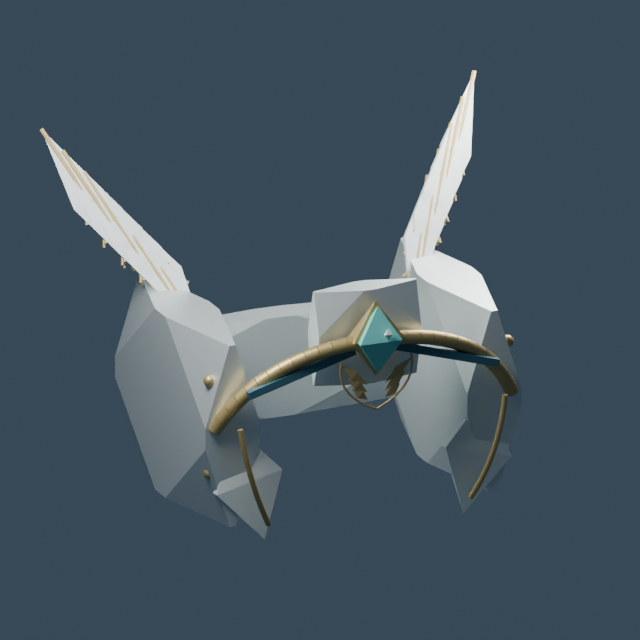
天空羽冠
頭盔 · 穿戴 Lv.1+
HP: 28 Defense: 3
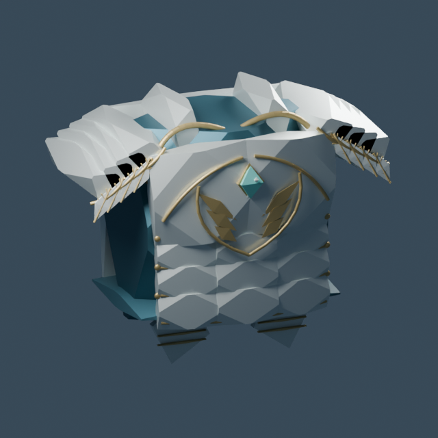
天空巡衛甲
胸甲 · 穿戴 Lv.1+
HP: 50 Defense: 5
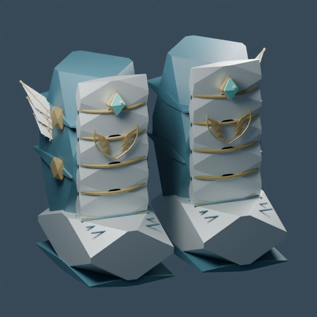
天空疾風靴
靴子 · 穿戴 Lv.1+
HP: 16 Speed: 1
精靈森林島
地表出生點至少相隔 90 格；怪物各有巡邏與追擊範圍。同一玩家最多吸引兩隻一般怪，頭目獨立。
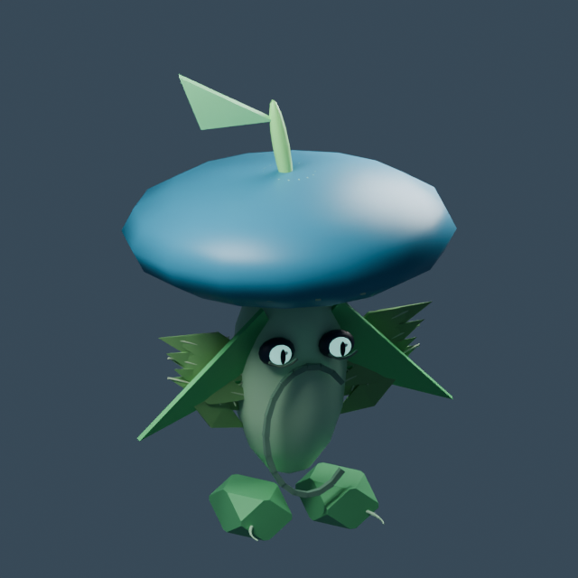
螢光芽靈
野外 · Lv.51–70
03 螢光淺林
| 森靈誓約刃 | 2% |
| 森靈葉冠 | 4% |
| 森靈藤紋甲 | 4% |
| 森靈逐風靴 | 5% |
| 無裝備 | 85% |
每次擊殺最多一件，為互斥機率。
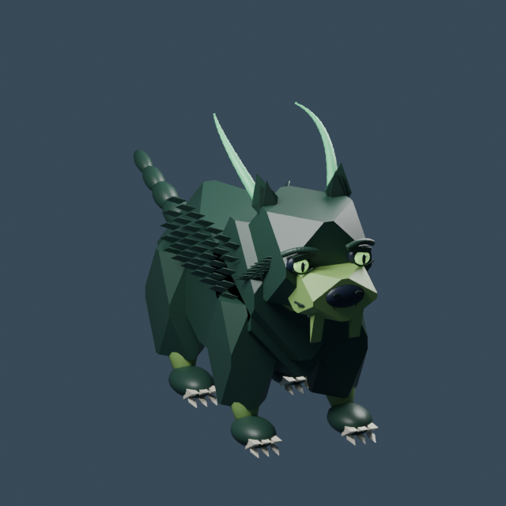
荊棘獵豹
精英 · Lv.71–95
04 古樹密林
| 森靈誓約刃 | 5% |
| 森靈葉冠 | 8% |
| 森靈藤紋甲 | 8% |
| 森靈逐風靴 | 9% |
| 無裝備 | 70% |
每次擊殺最多一件，為互斥機率。
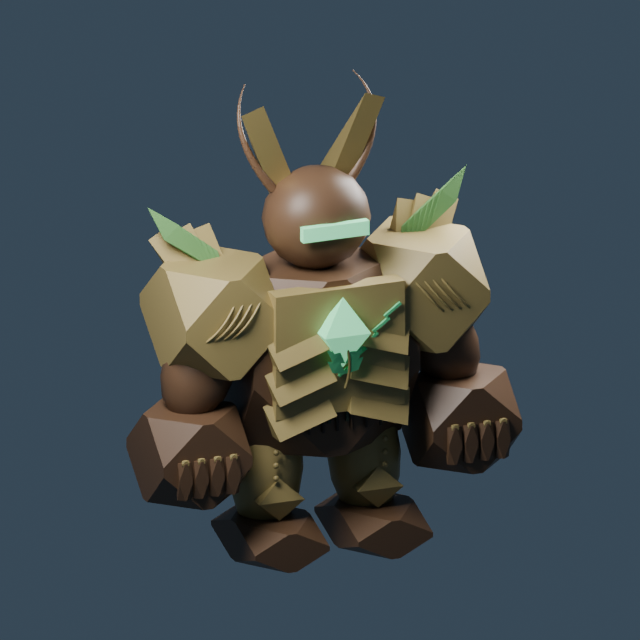
樹根守衛
洞窟 · Lv.96–110
05 樹根洞窟 → 洞內三室（分散生成）
| 森靈誓約刃 | 8% |
| 森靈葉冠 | 12% |
| 森靈藤紋甲 | 12% |
| 森靈逐風靴 | 13% |
| 無裝備 | 55% |
每次擊殺最多一件，為互斥機率。
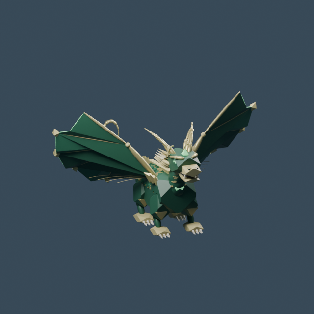
古樹森龍
頭目 · Lv.120–120
06 森靈試煉場
| 森靈誓約刃 | 15% |
| 森靈葉冠 | 25% |
| 森靈藤紋甲 | 35% |
| 森靈逐風靴 | 25% |
| 無裝備 | 0% |
每次擊殺最多一件，為互斥機率。
本島掉落套裝
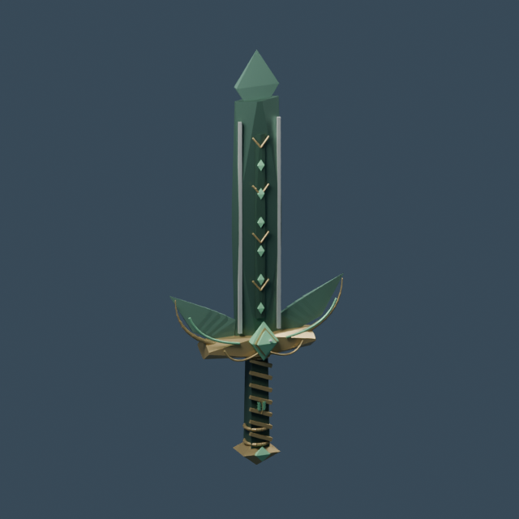
森靈誓約刃
武器 · 穿戴 Lv.51+
Attack: 113
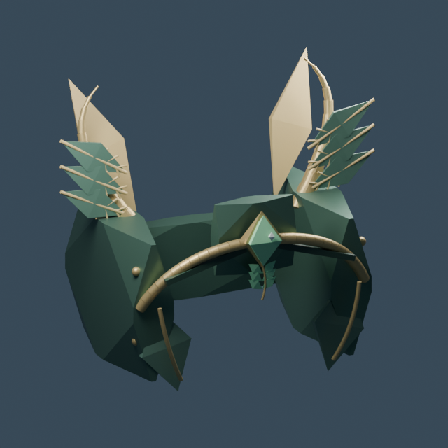
森靈葉冠
頭盔 · 穿戴 Lv.51+
HP: 152 Defense: 9
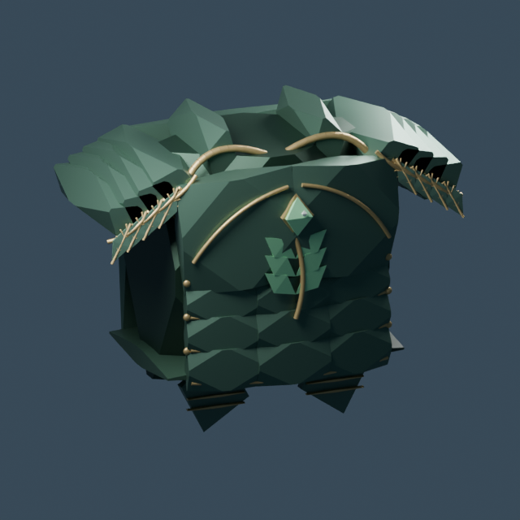
森靈藤紋甲
胸甲 · 穿戴 Lv.51+
HP: 326 Defense: 16
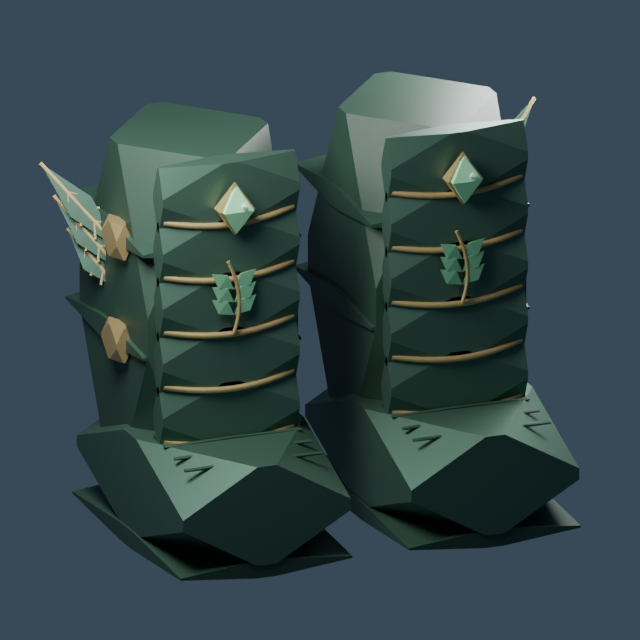
森靈逐風靴
靴子 · 穿戴 Lv.51+
HP: 92 Defense: 3 Speed: 2
熔岩火山島
地表出生點至少相隔 90 格；怪物各有巡邏與追擊範圍。同一玩家最多吸引兩隻一般怪，頭目獨立。
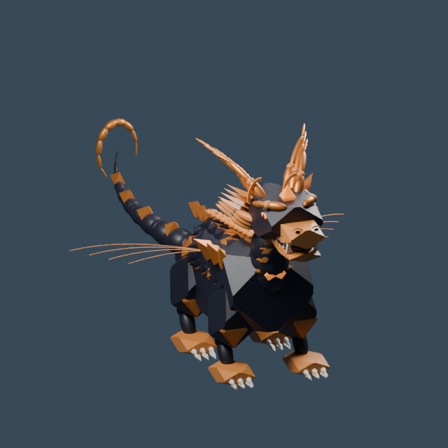
熔岩幼龍
野外 · Lv.121–150
03 焦土幼龍區
| 烈焰龍王巨劍 | 2% |
| 烈焰龍角盔 | 4% |
| 烈焰龍鱗甲 | 4% |
| 烈焰踏空靴 | 5% |
| 無裝備 | 85% |
每次擊殺最多一件，為互斥機率。
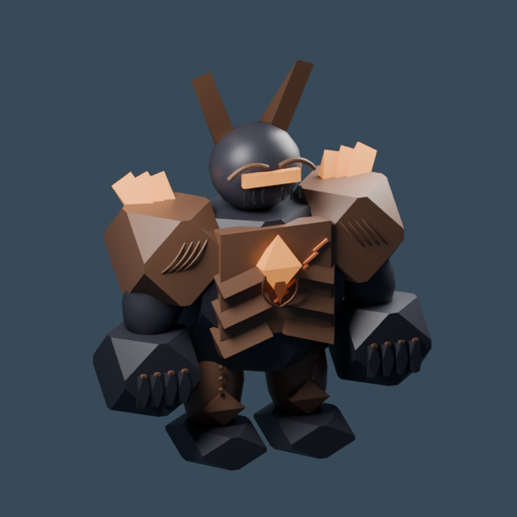
玄武岩魔像
精英 · Lv.151–185
04 黑曜石高地
| 烈焰龍王巨劍 | 5% |
| 烈焰龍角盔 | 8% |
| 烈焰龍鱗甲 | 8% |
| 烈焰踏空靴 | 9% |
| 無裝備 | 70% |
每次擊殺最多一件，為互斥機率。
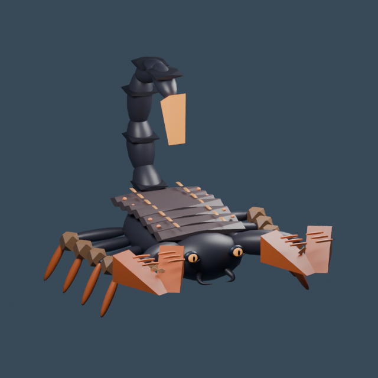
熔火巨蠍
洞窟 · Lv.186–205
05 熔火礦洞 → 洞內三室（分散生成）
| 烈焰龍王巨劍 | 8% |
| 烈焰龍角盔 | 12% |
| 烈焰龍鱗甲 | 12% |
| 烈焰踏空靴 | 13% |
| 無裝備 | 55% |
每次擊殺最多一件，為互斥機率。
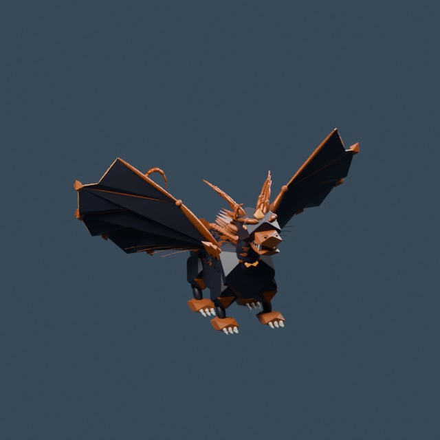
熔岩龍王
頭目 · Lv.220–220
06 火山龍王巢
| 烈焰龍王巨劍 | 15% |
| 烈焰龍角盔 | 25% |
| 烈焰龍鱗甲 | 35% |
| 烈焰踏空靴 | 25% |
| 無裝備 | 0% |
每次擊殺最多一件，為互斥機率。
本島掉落套裝
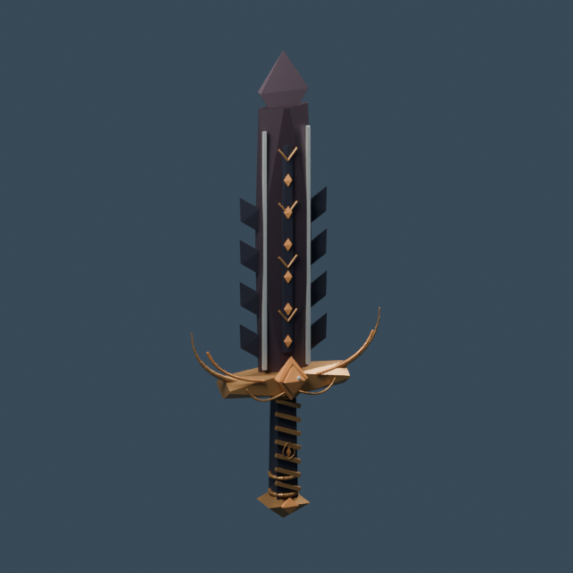
烈焰龍王巨劍
武器 · 穿戴 Lv.121+
Attack: 246
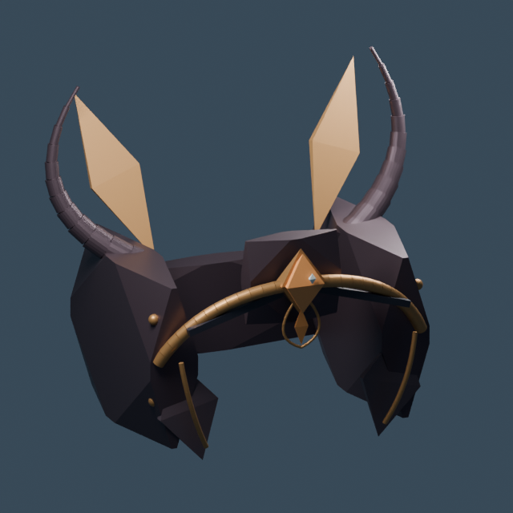
烈焰龍角盔
頭盔 · 穿戴 Lv.121+
HP: 328 Defense: 16
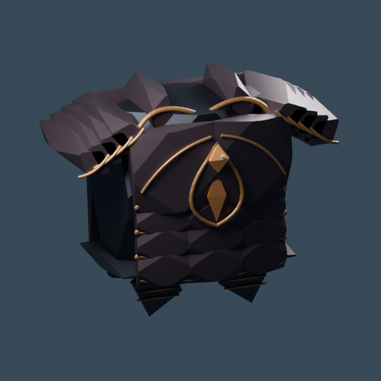
烈焰龍鱗甲
胸甲 · 穿戴 Lv.121+
HP: 710 Defense: 32
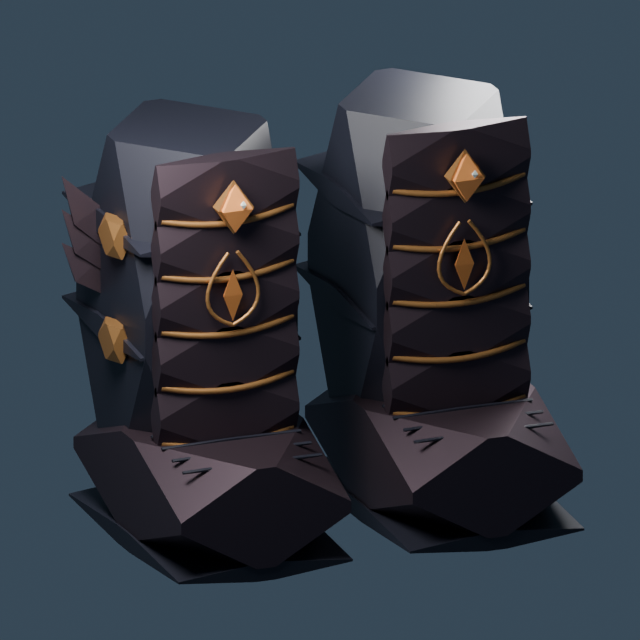
烈焰踏空靴
靴子 · 穿戴 Lv.121+
HP: 196 Defense: 6 Speed: 2
冰晶天空島
地表出生點至少相隔 90 格；怪物各有巡邏與追擊範圍。同一玩家最多吸引兩隻一般怪，頭目獨立。
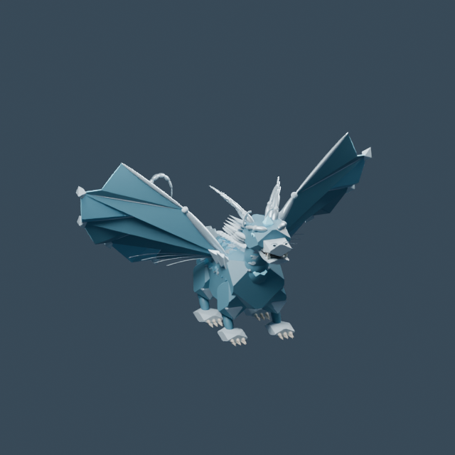
冰晶飛龍
野外 · Lv.221–260
03 凍湖飛龍區
| 冰霜神劍 | 2% |
| 冰晶王冠 | 4% |
| 冰霜守護甲 | 4% |
| 冰晶戰靴 | 5% |
| 無裝備 | 85% |
每次擊殺最多一件，為互斥機率。
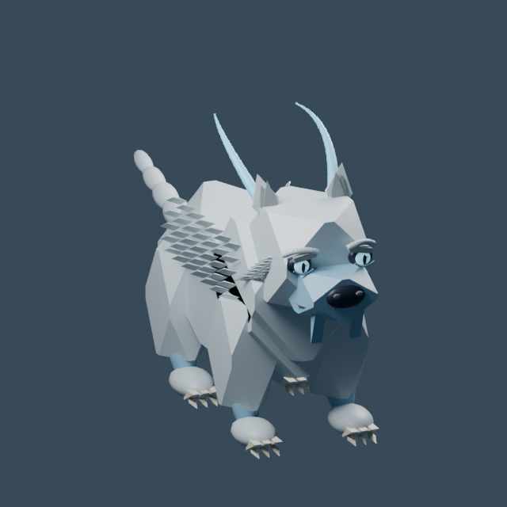
霜牙雪豹
精英 · Lv.261–300
04 冰晶峽谷
| 冰霜神劍 | 5% |
| 冰晶王冠 | 8% |
| 冰霜守護甲 | 8% |
| 冰晶戰靴 | 9% |
| 無裝備 | 70% |
每次擊殺最多一件，為互斥機率。
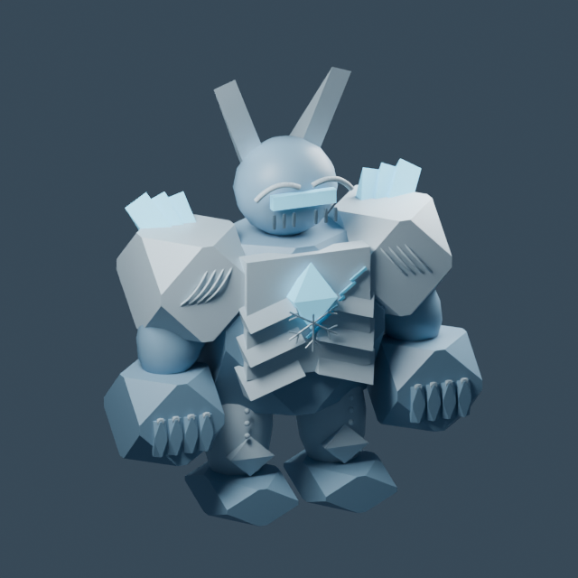
寒霜巨像
洞窟 · Lv.301–330
05 寒霜洞窟 → 洞內三室（分散生成）
| 冰霜神劍 | 8% |
| 冰晶王冠 | 12% |
| 冰霜守護甲 | 12% |
| 冰晶戰靴 | 13% |
| 無裝備 | 55% |
每次擊殺最多一件，為互斥機率。
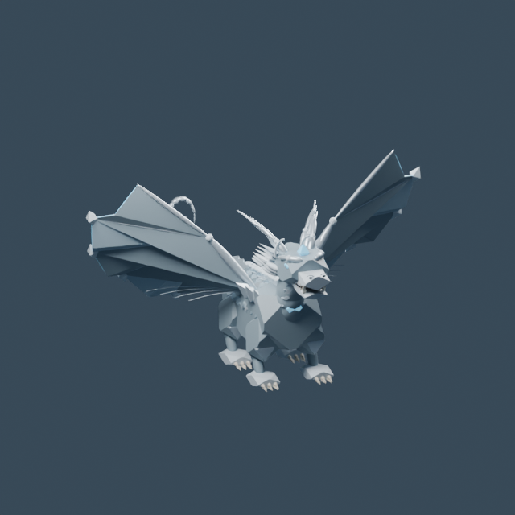
冰冠龍后
頭目 · Lv.350–350
06 冰宮試煉場
| 冰霜神劍 | 15% |
| 冰晶王冠 | 25% |
| 冰霜守護甲 | 35% |
| 冰晶戰靴 | 25% |
| 無裝備 | 0% |
每次擊殺最多一件，為互斥機率。
本島掉落套裝
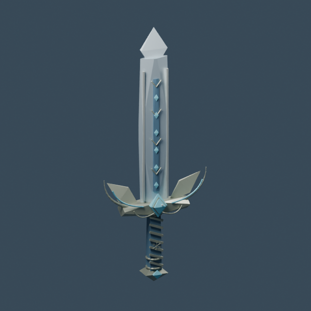
冰霜神劍
武器 · 穿戴 Lv.221+
Attack: 436
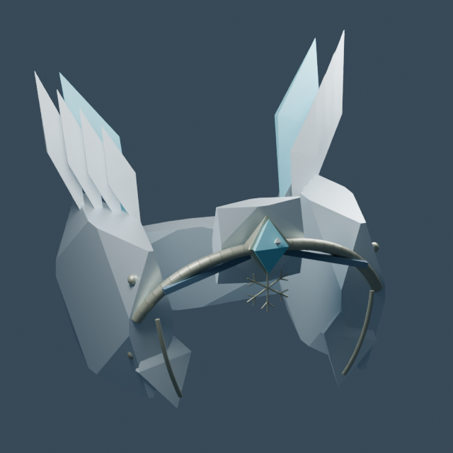
冰晶王冠
頭盔 · 穿戴 Lv.221+
HP: 578 Defense: 27
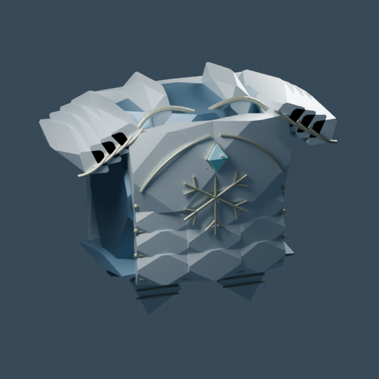
冰霜守護甲
胸甲 · 穿戴 Lv.221+
HP: 1260 Defense: 54
冰晶戰靴
靴子 · 穿戴 Lv.221+
HP: 346 Defense: 11 Speed: 3
雷霆神殿島
地表出生點至少相隔 90 格；怪物各有巡邏與追擊範圍。同一玩家最多吸引兩隻一般怪，頭目獨立。
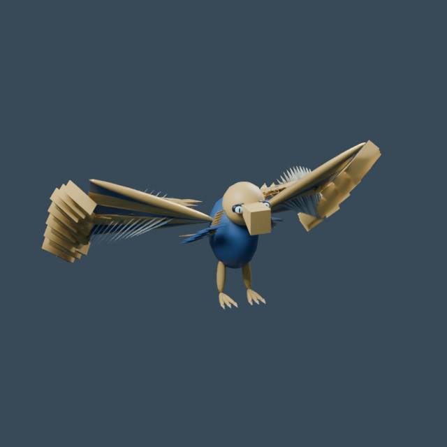
雷羽獵鷹
野外 · Lv.351–395
03 雷獸遺跡區
| 雷霆裁決長槍 | 2% |
| 雷霆龍角冠 | 4% |
| 雷霆戰鎧 | 4% |
| 雷霆踏雲靴 | 5% |
| 無裝備 | 85% |
每次擊殺最多一件，為互斥機率。
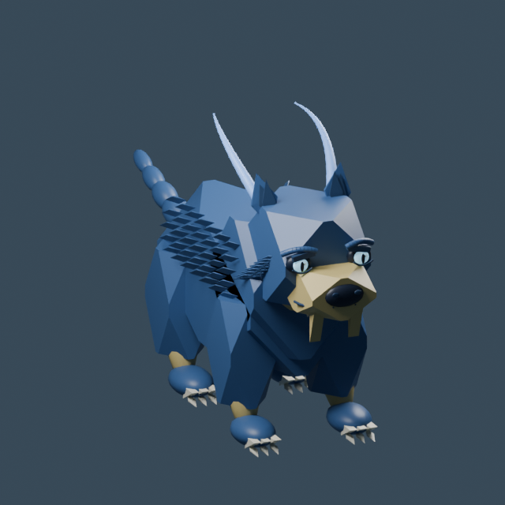
雷紋戰狼
精英 · Lv.396–445
04 引雷高塔群
| 雷霆裁決長槍 | 5% |
| 雷霆龍角冠 | 8% |
| 雷霆戰鎧 | 8% |
| 雷霆踏雲靴 | 9% |
| 無裝備 | 70% |
每次擊殺最多一件，為互斥機率。
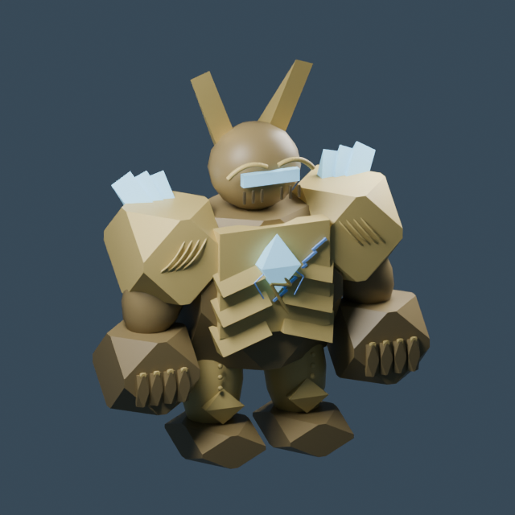
引雷守衛
洞窟 · Lv.446–480
05 風暴地窖 → 洞內三室（分散生成）
| 雷霆裁決長槍 | 8% |
| 雷霆龍角冠 | 12% |
| 雷霆戰鎧 | 12% |
| 雷霆踏雲靴 | 13% |
| 無裝備 | 55% |
每次擊殺最多一件，為互斥機率。
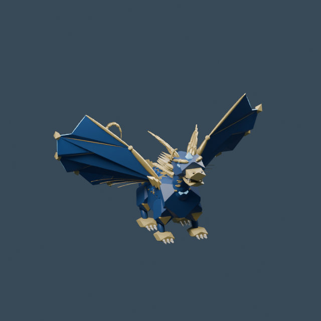
雷霆龍帝
頭目 · Lv.500–500
06 雷霆神殿
| 雷霆裁決長槍 | 15% |
| 雷霆龍角冠 | 25% |
| 雷霆戰鎧 | 35% |
| 雷霆踏雲靴 | 25% |
| 無裝備 | 0% |
每次擊殺最多一件，為互斥機率。
本島掉落套裝
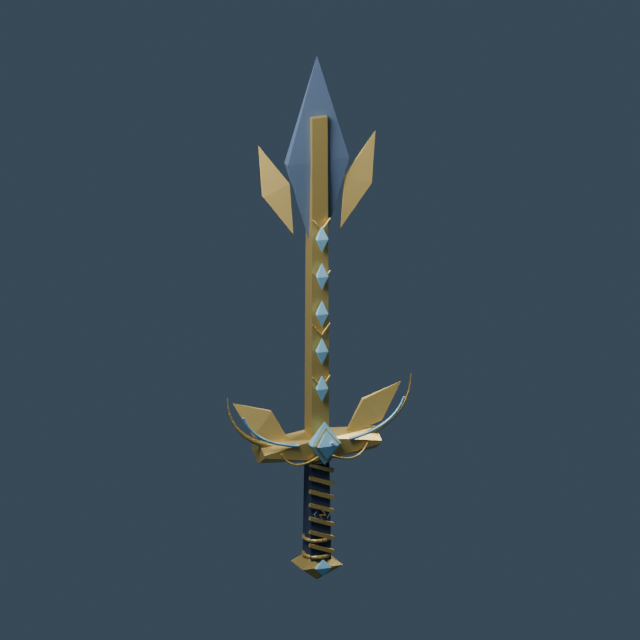
雷霆裁決長槍
武器 · 穿戴 Lv.351+
Attack: 683
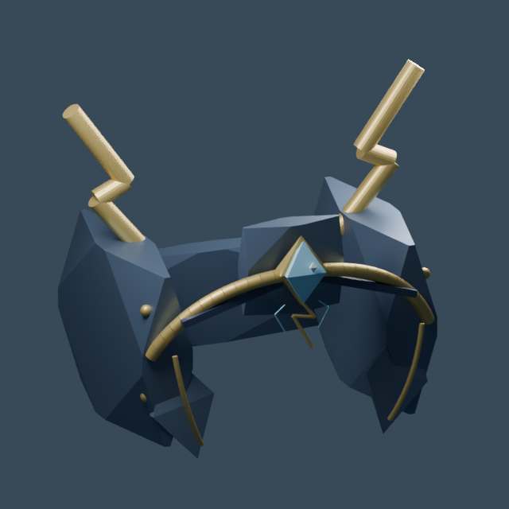
雷霆龍角冠
頭盔 · 穿戴 Lv.351+
HP: 902 Defense: 42
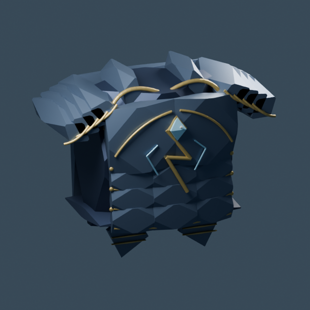
雷霆戰鎧
胸甲 · 穿戴 Lv.351+
HP: 1976 Defense: 82
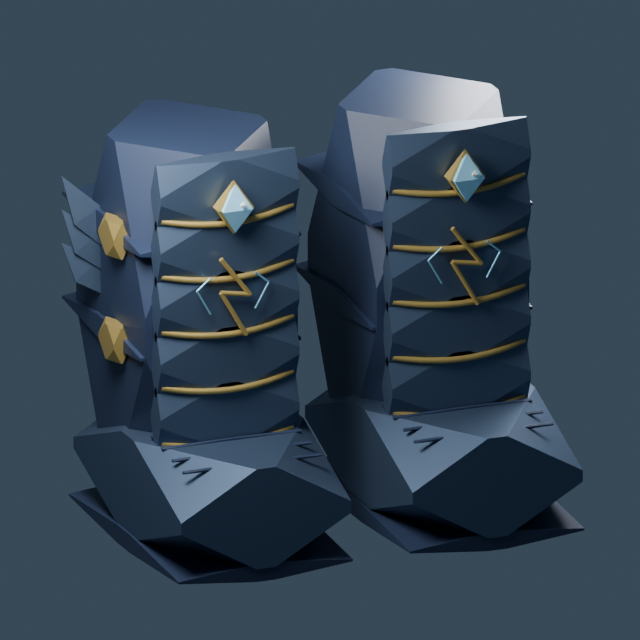
雷霆踏雲靴
靴子 · 穿戴 Lv.351+
HP: 542 Defense: 18 Speed: 3
暗影深淵島
地表出生點至少相隔 90 格；怪物各有巡邏與追擊範圍。同一玩家最多吸引兩隻一般怪，頭目獨立。
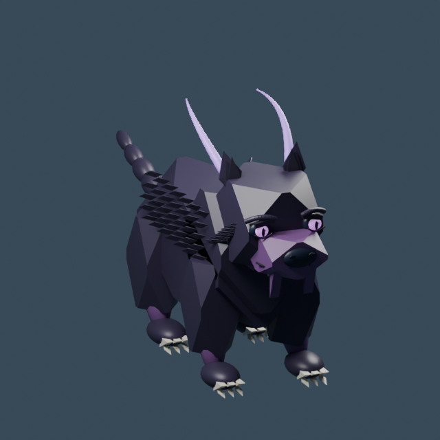
暗影幽狼
野外 · Lv.501–545
03 暗影荒野
| 虛空龍神雙刃 | 2% |
| 虛空龍神冠 | 4% |
| 虛空龍神甲 | 4% |
| 虛空瞬影靴 | 5% |
| 無裝備 | 85% |
每次擊殺最多一件，為互斥機率。
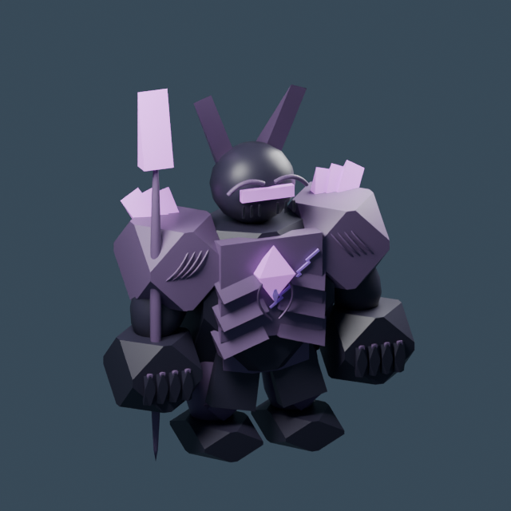
黑曜魔騎
精英 · Lv.546–595
04 黑曜石裂谷
| 虛空龍神雙刃 | 5% |
| 虛空龍神冠 | 8% |
| 虛空龍神甲 | 8% |
| 虛空瞬影靴 | 9% |
| 無裝備 | 70% |
每次擊殺最多一件，為互斥機率。
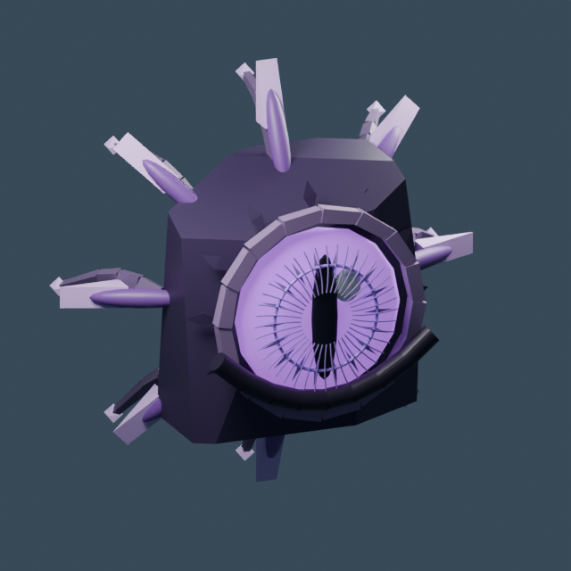
深淵眼魔
洞窟 · Lv.596–630
05 深淵地城 → 洞內三室（分散生成）
| 虛空龍神雙刃 | 8% |
| 虛空龍神冠 | 12% |
| 虛空龍神甲 | 12% |
| 虛空瞬影靴 | 13% |
| 無裝備 | 55% |
每次擊殺最多一件，為互斥機率。
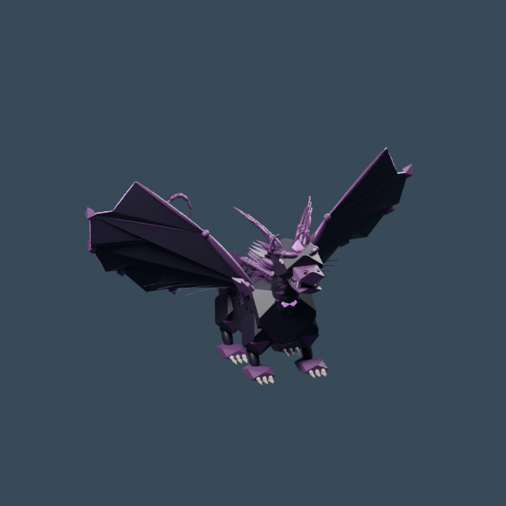
虛空龍王
頭目 · Lv.650–650
06 虛空龍王座
| 虛空龍神雙刃 | 15% |
| 虛空龍神冠 | 25% |
| 虛空龍神甲 | 35% |
| 虛空瞬影靴 | 25% |
| 無裝備 | 0% |
每次擊殺最多一件，為互斥機率。
本島掉落套裝
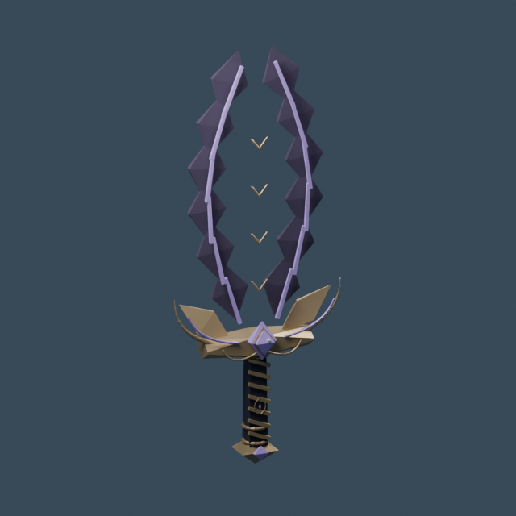
虛空龍神雙刃
武器 · 穿戴 Lv.501+
Attack: 968
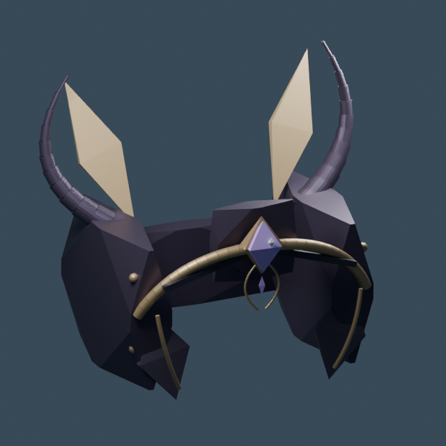
虛空龍神冠
頭盔 · 穿戴 Lv.501+
HP: 1278 Defense: 58
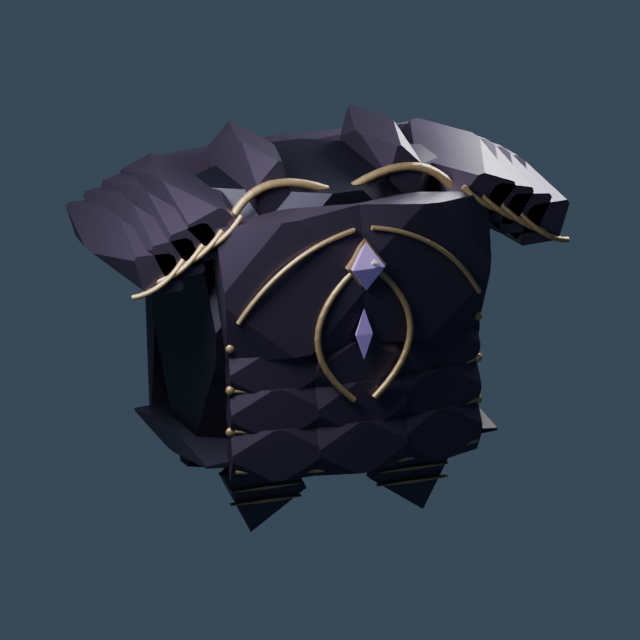
虛空龍神甲
胸甲 · 穿戴 Lv.501+
HP: 2800 Defense: 115
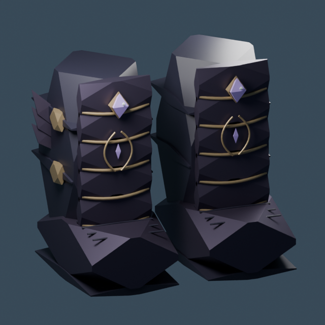
虛空瞬影靴
靴子 · 穿戴 Lv.501+
HP: 766 Defense: 25 Speed: 4
神龍聖域島
地表出生點至少相隔 90 格；怪物各有巡邏與追擊範圍。同一玩家最多吸引兩隻一般怪，頭目獨立。
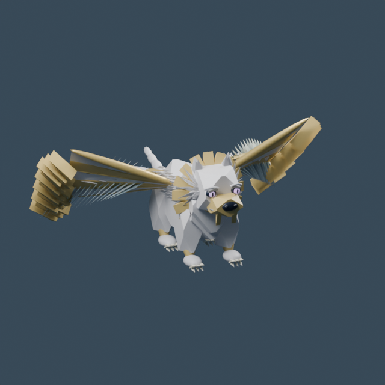
星穹翼獅
野外 · Lv.651–695
03 龍裔試煉園
| 神龍聖裁巨劍 | 2% |
| 神龍聖冠 | 4% |
| 神龍聖鎧 | 4% |
| 神龍御空靴 | 5% |
| 無裝備 | 85% |
每次擊殺最多一件，為互斥機率。
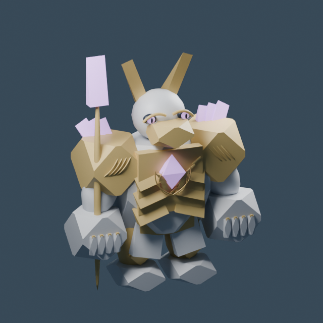
聖域龍衛
精英 · Lv.696–745
04 星穹守衛區
| 神龍聖裁巨劍 | 5% |
| 神龍聖冠 | 8% |
| 神龍聖鎧 | 8% |
| 神龍御空靴 | 9% |
| 無裝備 | 70% |
每次擊殺最多一件，為互斥機率。
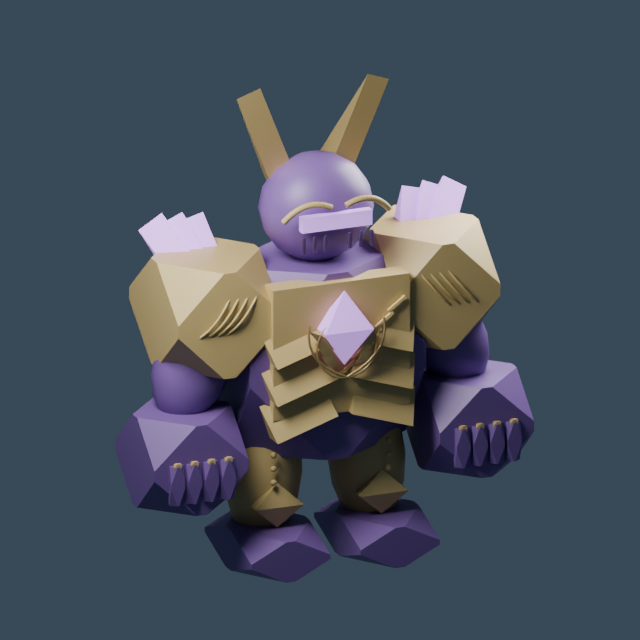
星晶巨像
洞窟 · Lv.746–780
05 聖域遺跡 → 洞內三室（分散生成）
| 神龍聖裁巨劍 | 8% |
| 神龍聖冠 | 12% |
| 神龍聖鎧 | 12% |
| 神龍御空靴 | 13% |
| 無裝備 | 55% |
每次擊殺最多一件，為互斥機率。
遠古神龍
頭目 · Lv.800–800
06 龍神終局場
| 神龍聖裁巨劍 | 15% |
| 神龍聖冠 | 25% |
| 神龍聖鎧 | 35% |
| 神龍御空靴 | 25% |
| 無裝備 | 0% |
每次擊殺最多一件，為互斥機率。
本島掉落套裝
神龍聖裁巨劍
武器 · 穿戴 Lv.651+
Attack: 1253
神龍聖冠
頭盔 · 穿戴 Lv.651+
HP: 1652 Defense: 75
神龍聖鎧
胸甲 · 穿戴 Lv.651+
HP: 3626 Defense: 148
神龍御空靴
靴子 · 穿戴 Lv.651+
HP: 992 Defense: 33 Speed: 4
初始裝備
天空見習劍
武器 · 穿戴 Lv.1+
Attack: 8
旅人護甲
胸甲 · 穿戴 Lv.1+
HP: 20 Defense: 2